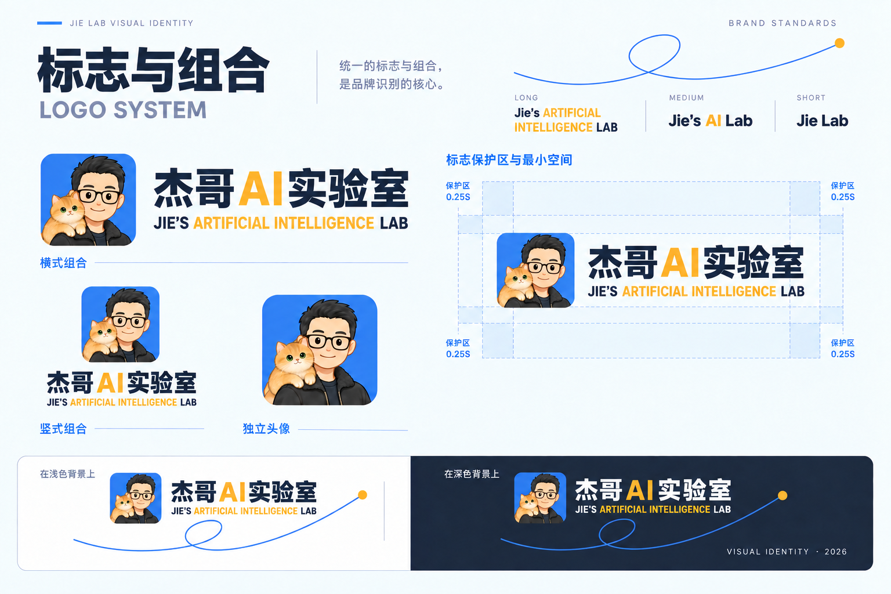
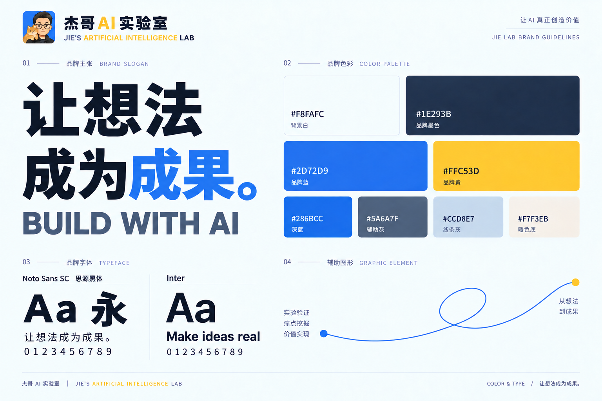
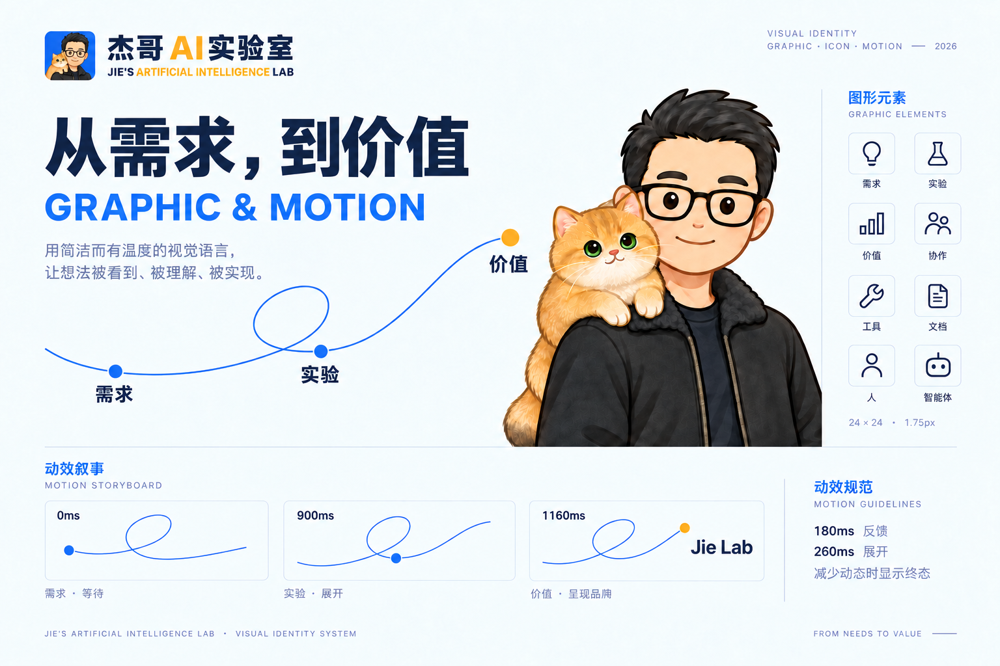
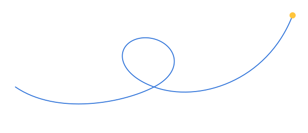

JIE’S ARTIFICIAL INTELLIGENCE LAB · 品牌总览 · 视觉示意01
品牌规范
视觉页看方向，下面的规则指导实际制作。
视觉页看方向，下面的规则指导实际制作。
让一线团队拥有自主应用 AI，创造业务价值的能力。
愿景：让先行者做出成果，带动更多人成为 builder；成为所进入行业值得信任的 AI 落地伙伴。
价值观：敢为人先、开放包容、价值导向、坦诚守信。
组织：人与 Agent 协作的 AI 原生实验室；从医药流通行业切入，延续深圳行动、开放与 builder 精神。

完整中文组合：杰哥 AI 实验室 / Jie’s ARTIFICIAL INTELLIGENCE LAB。完整中英组合两行可见左右边缘等宽对齐。
三档英文：LONG · Jie’s ARTIFICIAL INTELLIGENCE LAB，用于完整中英组合；MEDIUM · Jie’s AI Lab，用于紧凑页眉、侧栏和有限空间；SHORT · Jie Lab，用于独立英文、窄栏、页脚和小尺寸。
完整中英组合保持最长英文；不要把缩写塞进完整中文组合。尺寸缩小后直接选择正式的紧凑英文或独立英文资产。浅底深墨、深底冷白，中文 AI / 英文 AI 或 ARTIFICIAL INTELLIGENCE 为品牌黄。
保护区至少 0.25S。最长英文需要阅读时组合宽 ≥480px；中档建议宽 ≥160px；短档建议宽 ≥80px。调用正式 SVG，禁止拉伸、重画或任意缩写。

品牌：Paper #F8FAFC · Ink #1E293B · Blue #2D72D9 · Yellow #FFC53D。
黄色用于 Logo 的 AI 与少量品牌强调，不承担正文、主要按钮或状态警告。蓝色用于行动、选中与链接；成功、警告、错误、信息采用独立语义。
浅色 UI 主要行动 #286BCC 配白字；深色 UI 主要行动 #8DBAFF 配深墨字。正文与提示使用各主题文字 token，不能直接把浅色颜色反转。
完整 UI 配色、悬停/按下状态和背景层级见新增的 UI 颜色规范；可复制 ui/theme.mjs 与 guide/ui-colors.json。印刷色彩仍按实际纸材与设备打样。
现有模板使用 Noto Sans SC 与 Inter，字体附 OFL。字体、布局与图形是制作参考，其他 AI 应用不强制照搬。
所有既有辅助曲线恢复为笛卡尔叶形线回环：中部叶片状自交，左侧缓慢下凹，经过回环后向右上方平滑延伸。
蓝色细线表达需求、实验与价值；实验中会回退，再尝试后继续上升。黄色节点强调价值实现。成品不显示坐标轴、公式或渐近线。
SVG 叶片按数学参数生成，两侧以匹配切向平滑衔接。调用 assets/brand/open-loop.svg；参数保存在 curve.json。曲线为可选辅助图形，不替代正式 Logo。
沿用指定原画：黑发、黑色圆框眼镜、黑色绒面外套；肩上金渐层猫，奶油色胸口、绿色眼睛。
原画 source/character-reference.png 保留；正式透明主图 assets/brand/character-master.png 是基于原画生成的忠实整理版。不换成几何脸或条纹橘猫。
成员可拥有独立 IP 与自主经营业务；成员标识只说明身份。成员身份不等于机构商业授权，组织项目与工作坊另行确认。
小婕标注“AI 员工 · 归属：杰哥”。其他 Agent 需标明真实归属和实际能力；无境创新作为合作伙伴平等并列，不描述为母公司。
网页：首屏一句清楚的承诺，一个主要行动；产品界面让导航、状态与按钮一目了然。浅色与深色模板共用 token。
社交：封面 1600×600；竖向海报 1080×1440。关键信息距边缘 ≥5%，头像和文字避开平台裁切。
视频：横版 1920×1080、竖版 1080×1920。提供封面、字幕叠层、片尾。字幕距左右 ≥8%，距底 ≥12%；实际平台控件可能需额外避让。
名片设计比例 90×54mm；工作表和报告 A4。提供打印 PDF 校样和可编辑 HTML；出血、色彩、纸材及工艺须印厂确认。
PPTX 含封面、需求/实验/价值、案例、行动四页，文字与形状可编辑，人物为图片资产。
既有曲线统一为保留自交叶片的笛卡尔叶形线回环，适用于报告、名片、视频、社交和动效示例。未来材料可按任务选择是否使用辅助曲线。
反馈参考 180ms；展开 260ms；回环路径绘制 900ms。系统减少动态时直接显示终态。
案例、指标与部署能力以实际事实为准。版式与交互不做额外品牌限制，可按需求和工具能力自由设计。
AI 可以制作业务应用、网站、报告、演示、海报、视频与其他材料。先明确任务、使用场景与真实内容。
必要规则一：遵循浅色/深色 UI 颜色语义。背景、文字、行动与状态调用对应 token；Logo 的 AI 保持品牌黄，不用黄色做浅底正文或主要按钮。
必要规则二：直接调用正式 Logo；完整中英组合配最长英文并等宽对齐；紧凑独立英文用中档，仅英文用短档，浅底/深底选对应资产，复杂背景加干净底板，保护区至少 0.25S。
除此之外，不强制字体、布局、组件库、图形、人物出现、动画、模板或辅助曲线。Ant Design 配置用于需要 Ant Design 的应用；其他工具按相同颜色语义实现即可。

Ant Design 6.6.5 · defaultAlgorithm + 明确的颜色 token
| 用途 | Token | 颜色 |
|---|---|---|
| 页面背景 | colorBgLayout | #F8FAFC |
| 内容表面 | colorBgContainer | #FFFFFF |
| 浮层表面 | colorBgElevated | #FFFFFF |
| 主要文字 | colorText | #1E293B |
| 次要文字 | colorTextSecondary | #5A6A7F |
| 提示文字 | colorTextPlaceholder | #5A6A7F |
| 主要行动 | colorPrimary | #286bcc |
| 行动悬停 | colorPrimaryHover | #1C58B0 |
| 行动按下 | colorPrimaryActive | #15468E |
| 按钮文字 | colorTextLightSolid | #FFFFFF |
| 链接 | colorLink | #286bcc |
| 控件边框 | colorBorder | #71839B |
| 分隔线 | colorBorderSecondary | #CCD8E7 |
| 成功 | colorSuccess | #18734b |
| 警告 | colorWarning | #895100 |
| 错误 | colorError | #b42332 |
| 信息 | colorInfo | #286bcc |
Ant Design 6.6.5 · darkAlgorithm + 明确的颜色 token
| 用途 | Token | 颜色 |
|---|---|---|
| 页面背景 | colorBgLayout | #101B2D |
| 内容表面 | colorBgContainer | #17243A |
| 浮层表面 | colorBgElevated | #21324D |
| 主要文字 | colorText | #F8FAFC |
| 次要文字 | colorTextSecondary | #B8C7DA |
| 提示文字 | colorTextPlaceholder | #B8C7DA |
| 主要行动 | colorPrimary | #8DBAFF |
| 行动悬停 | colorPrimaryHover | #A9CAFF |
| 行动按下 | colorPrimaryActive | #669EEE |
| 按钮文字 | colorTextLightSolid | #101B2D |
| 链接 | colorLink | #8DBAFF |
| 控件边框 | colorBorder | #71839B |
| 分隔线 | colorBorderSecondary | #3A4D68 |
| 成功 | colorSuccess | #73D49F |
| 警告 | colorWarning | #FFD666 |
| 错误 | colorError | #FF8A94 |
| 信息 | colorInfo | #8DBAFF |
从 ui/theme.mjs 导入 light / dark，在 ConfigProvider 中使用。基于 Ant Design 官方主题 API。
主题切换使用 defaultAlgorithm / darkAlgorithm，背景与文字使用对应语义 token。弹窗、通知使用 App 上下文，跟随主题。
颜色不能成为唯一状态说明：成功、警告、失败与信息同时提供文字或图标。正文和提示文字至少 4.5:1；大型文字、控件及焦点至少 3:1。
黄色 #FFC53D 保留给 Logo 的 AI 与少量品牌强调。AI 品牌层面只要求颜色与 Logo 正确，其他设计按任务自由选择。
完整中文组合使用最长英文，中英文左右对齐；紧凑位置用中档独立英文，英文单独使用时选短档。
完整中文组合、正式封面与大尺寸
紧凑页眉、侧栏与有限空间
独立英文、窄栏、页脚与小尺寸
正方形 / 长方形 × 透明 / 黄色 / 蓝色。每种都有原尺寸大图与256px缩略图。透明 PNG 的棋盘格仅为展示。
1254 × 1254 PNG · 含透明通道
1672 × 941 PNG · 含透明通道
1254 × 1254 PNG
1672 × 941 PNG
1254 × 1254 PNG
1672 × 941 PNG
以笛卡尔叶形线为基础，保留叶片自交回环。左侧缓慢下凹，中部略倾斜回环，右侧平滑向上延伸。

价值实现需要实验。进展会回退，复盘与再次尝试后继续上升。蓝色细线贯穿全过程，黄色节点表示价值。
成品不显示坐标轴、公式或渐近线；静态与动效调用同一个正式资产。